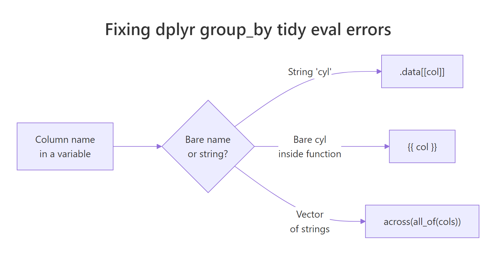

dplyr group_by Error: 'must return a single string', The .data[[]] Fix
The dplyr "must return a single string" error fires when you hand group_by() a column name stored in a variable. dplyr's tidy evaluation reads bare names as columns and strings as literal values, to group by a stored column name, wrap the variable in .data[[col]] (for strings) or {{ col }} (for bare names inside functions).
What does 'must return a single string' mean in dplyr?
You hit this error the moment you try to be clever about grouping. Instead of writing group_by(cyl), you store the column name in a variable and pass it in, and dplyr complains with a message about strings, lengths, or missing columns. Below is the smallest reproduction. Run it once, then we'll unpack why dplyr disagrees with what you meant.
Notice what dplyr is really saying: *"I looked for a column literally named my_col in your data frame, and there isn't one." It never peeked at the value* held by my_col (the string "cyl"), it took the expression you typed at face value. In older dplyr versions the same mistake can surface as "must return a single string" or "must be a length-one character vector," but the cause is identical.
Try it: Store "gear" in ex_col and reproduce the same error by passing ex_col to group_by().
Click to reveal solution
Explanation: Same pattern, same failure, dplyr treats ex_col as a literal column name, not as a reference to the string "gear".
Why does dplyr treat my variable as a column name?
dplyr uses tidy evaluation, a system that captures the expression you type, not the value it evaluates to. When you write group_by(cyl), dplyr wants to see the symbol cyl so it can look up a column by that exact name. When you write group_by(my_col), it sees the symbol my_col and looks for that column, never dereferencing the variable to discover it holds "cyl".
The same trap appears with vectors of column names.
dplyr isn't being stubborn, it's protecting you from ambiguity. If it silently dereferenced variables, a typo or shadowed name would group your data by the wrong column and hide the bug. The explicit error is the safer choice.
.data[[col]] or the embrace operator {{ col }}. Everything else in this post is applying that one idea.Try it: Predict what happens if you assign ex_valid <- "mpg" and run group_by(ex_valid). Does the error mention mpg or ex_valid?
Click to reveal solution
Explanation: The error names ex_valid, not mpg. That confirms dplyr is looking at the literal symbol you passed, it never checks the variable's value. Even when the value would have been a real column, the lookup fails because dplyr looked for the wrong name.
How do you fix it with .data[[col]]?
.data is a pronoun provided by the rlang package (re-exported by dplyr). Inside a dplyr verb, .data stands in for "the current data frame" and supports string indexing with [[ ]]. Writing .data[["cyl"]] tells dplyr: "look up the column whose name is the string I'm about to hand you." That's exactly the bridge we need.
Wrap my_col in .data[[ ]] and the grouping works.
dplyr evaluated my_col (getting "cyl"), handed the string to .data[[ ]], and looked up the cyl column. The resulting tibble has one row per engine-cylinder group and the mean mpg for each. No magic, just an explicit string lookup where dplyr expected a bare symbol.
.data[[ ]] is clearer, avoids the !! (bang-bang) unquoting operator, and is the pattern the tidyverse team recommends in the dplyr programming vignette. Reserve !!sym() for meta-programming cases where you're assembling expressions dynamically.Try it: Fix this broken pipeline by wrapping the string variable with .data[[ ]].
Click to reveal solution
Explanation: Wrapping ex_col in .data[[ ]] tells dplyr to treat its value ("gear") as a column name lookup instead of a bare symbol.
When should you use {{ col }} instead?
The .data[[col]] pattern works when the column name arrives as a string. But what if you're writing a reusable function and you want the caller to pass a bare column name, the way group_by() itself accepts bare names? That's what the embrace operator {{ }} is for. It forwards an unevaluated expression from the caller straight through to dplyr's tidy-evaluation machinery.
Here's a helper that takes a bare column and returns a grouped mean.
The caller writes cyl with no quotes, exactly the ergonomics of built-in dplyr verbs. Inside group_summary(), {{ group_col }} unwraps that expression and hands it to group_by() as a bare name. If you called group_summary(mtcars, "cyl") instead, the embrace would forward the string and you'd be back to the original error.
{{ }} needs a bare name; .data[[ ]] needs a string. That's the whole decision. Your function's signature dictates which one you reach for. Mixing them in the same function is fine, support both by letting one argument be a bare column and another be a string of column names.Try it: Write ex_median_summary(df, group_col) that groups by a bare column and returns the median of mpg per group. Test it on mtcars with cyl.
Click to reveal solution
Explanation: {{ group_col }} forwards the unevaluated cyl expression to group_by(), giving callers the same bare-name ergonomics dplyr verbs offer natively.
How do .data[[]] and {{ }} compare?
Use the table below as a cheat sheet. Pick the pattern that matches how your column name arrives at the call site.
| Input form | Pattern | Typical use case |
|---|---|---|
String variable ("cyl") |
.data[[col]] |
Looping over columns, config-driven pipelines, scripts |
Bare name (cyl) |
{{ col }} |
User-facing wrapper functions that mimic dplyr verbs |
Vector of strings (c("cyl","gear")) |
across(all_of(cols)) |
Grouping by 2+ columns named in a vector |
Deprecated group_by_() |
Replace with one of the above | Old code from dplyr 0.5 and earlier |

Figure 1: Choosing between .data[[col]], {{ col }}, and across(all_of()) based on how the column name is supplied.
When you have a vector of column names, across(all_of()) is the idiomatic solution. It accepts a character vector and applies any dplyr selection to those columns.
all_of() is the strict version: it errors immediately if any name in group_cols is missing from the data, which surfaces typos at the call site instead of further down the pipeline. any_of() is the lenient cousin that silently skips missing names.
Try it: Regroup mtcars by c("am", "gear") using across(all_of()) and summarise the mean horsepower.
Click to reveal solution
Explanation: across(all_of(ex_group_cols)) expands the string vector into the two bare column references dplyr wants, without any further quoting.
What other dplyr verbs need .data[[]]?
The same pattern applies everywhere in dplyr, not just group_by(). Any verb that takes a column reference, filter(), arrange(), mutate(), summarise(), select(), pull(), accepts .data[[col]] when you're holding the column name as a string.
Three things to notice. First, the .data[[my_col]] idiom is identical across all three verbs, one pattern to learn, everywhere it applies. Second, in mutate() the output column name also comes from my_col, built with the walrus operator := and glue-style string interpolation ("double_{my_col}"). Third, nothing stops you from mixing .data[[]] with bare column names in the same expression, filter() and mutate() happily accept both.
my_col and .data[[my_col]] in the same expression by accident. If you forget the wrapper on one of several references, dplyr will look for a literal my_col column and throw the original error again, but only on the unwrapped reference, which makes the failure harder to spot in a long pipeline. Wrap every reference, or wrap none.Try it: Using ex_col <- "wt", filter mtcars to rows where wt > 3, then arrange by descending wt. Use .data[[ex_col]] throughout.
Click to reveal solution
Explanation: The same .data[[ex_col]] wrapper works in both filter() and arrange(). Every reference to the variable column needs the wrapper, mixing bare ex_col with .data[[ex_col]] would break the pipeline.
Practice Exercises
Exercise 1: Build a reusable grouped-mean helper
Write a function summarise_by_col(df, col_string, metric_col) that groups df by the column whose name is in col_string (a string) and returns the mean of metric_col (also a string) per group. Test it on mtcars with col_string = "cyl" and metric_col = "mpg". Save the result to my_result.
Click to reveal solution
Explanation: .data[[col_string]] handles the grouping column and .data[[metric_col]] handles the column fed to mean(). The same pronoun works in both positions because dplyr evaluates it consistently across verbs.
Exercise 2: Accept bare names OR strings
Write flex_group_summary(df, group_col) that works whether the caller passes a bare column name (cyl) or a string ("cyl"). Return a tibble with the group column and a mean_mpg column. Hint: try the bare-name path first with {{ }}; if that fails, catch the error and fall back to .data[[ ]] using rlang::as_string(rlang::ensym(group_col)) to recover the name.
Click to reveal solution
Explanation: rlang::enexpr(group_col) captures the caller's expression without evaluating it. If the captured expression is a character literal, we know the caller passed a string and use .data[[ ]]. Otherwise we assume a bare name and use {{ }}. Both paths produce identical output for real column references.
Complete Example
Putting everything together: a config-driven summary function that reads a vector of grouping columns and a single metric column, all as strings, and returns the grouped mean. This is the shape real pipelines take when column choices come from a YAML config, a Shiny input, or a loop over many metrics.
Two idioms do the work. across(all_of(config_cols)) expands the string vector into real grouping columns, and .data[[metric_col]] lets the summary expressions reach for the metric column by string. Swap config_cols for any other vector of column names and the pipeline keeps working, that's the payoff of learning these two patterns.
Summary
| Input | Pattern | Example |
|---|---|---|
| Column name as a string variable | .data[[col]] |
group_by(.data[[my_col]]) |
| Column name passed bare to a function | {{ col }} |
group_by({{ group_col }}) |
| Vector of string column names | across(all_of(cols)) |
group_by(across(all_of(group_cols))) |
| Same pattern in other verbs | Works in filter, arrange, mutate, summarise, select, pull |
filter(.data[[col]] > 0) |
| Output column name from a string | "{var}" := value |
mutate("mean_{col}" := mean(.data[[col]])) |
Any dplyr error that mentions "must return a single string," "Column not found," or "must be a length-one character vector" when you passed a column-name variable is the same problem with a different shirt on, and the patterns above are the fix.
References
- dplyr, Programming with dplyr vignette. Link
- rlang,
.datapronoun reference. Link - tidyselect,
all_of()andany_of()reference. Link - Wickham, H., Advanced R, 2nd Edition, Chapter 19: Quasiquotation. Link
- tidyverse blog, "dplyr 0.7.0" (introduction of tidy evaluation). Link
Continue Learning
- 50 R Errors Decoded: Plain-English Explanations and Exact Fixes, the parent index of every common R error, with one-line diagnoses and links to focused fixes like this one.
- dplyr Basics: group_by and summarise, the everyday, non-programmatic use of grouping before you need the
.data[[]]pattern. - Writing Functions in R, how argument passing, environments, and lazy evaluation shape R function design, including the ideas that make
{{ }}possible.